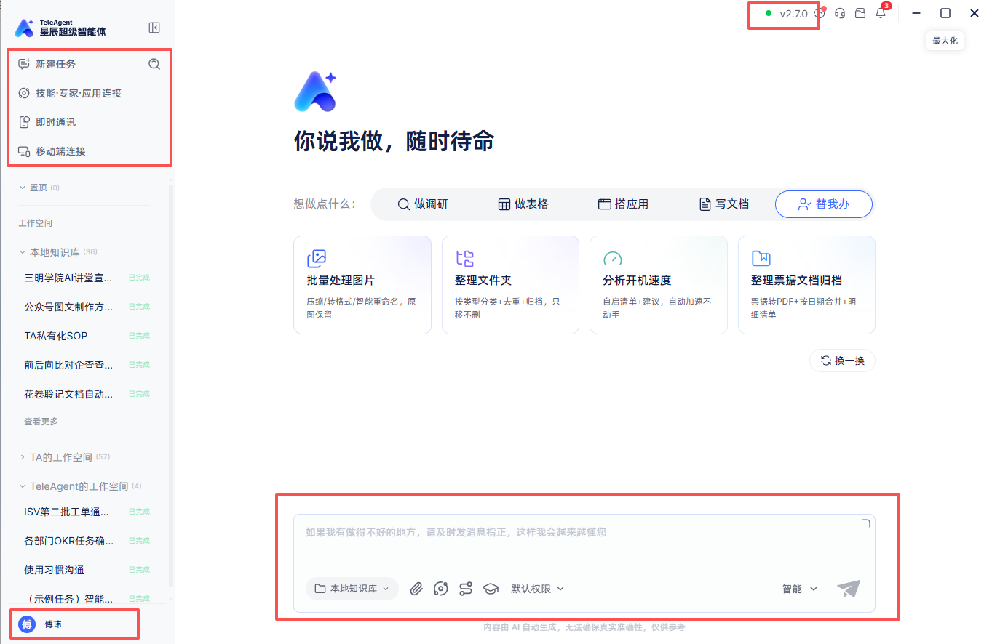
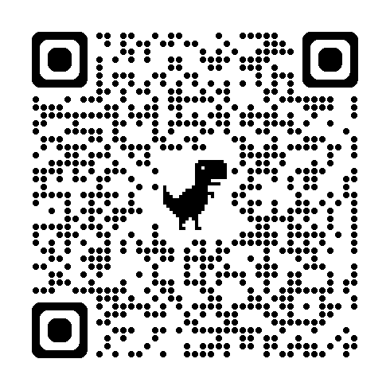
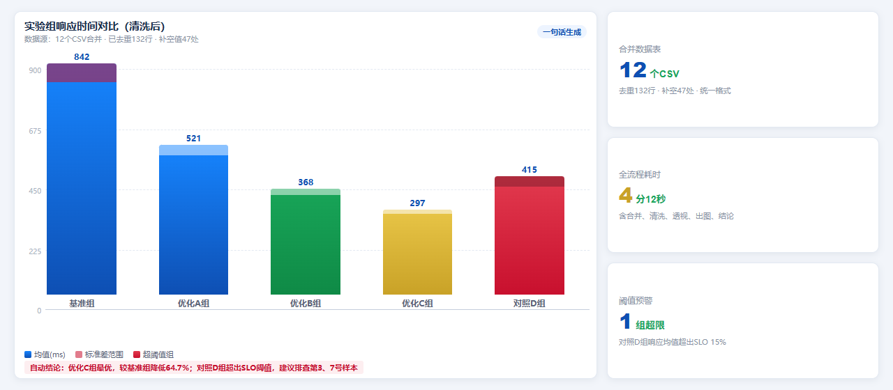
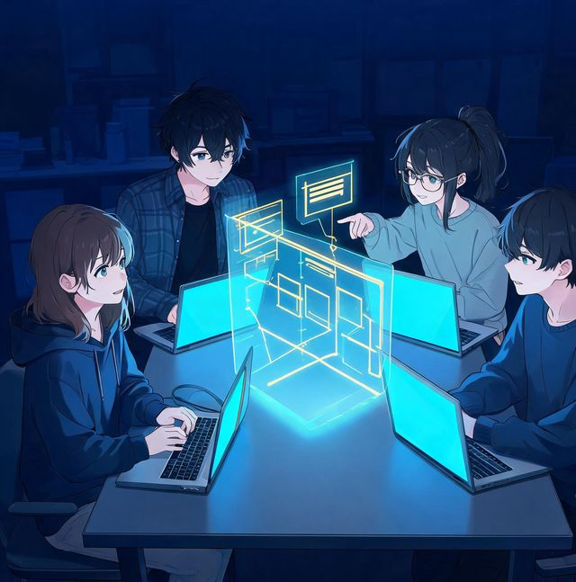
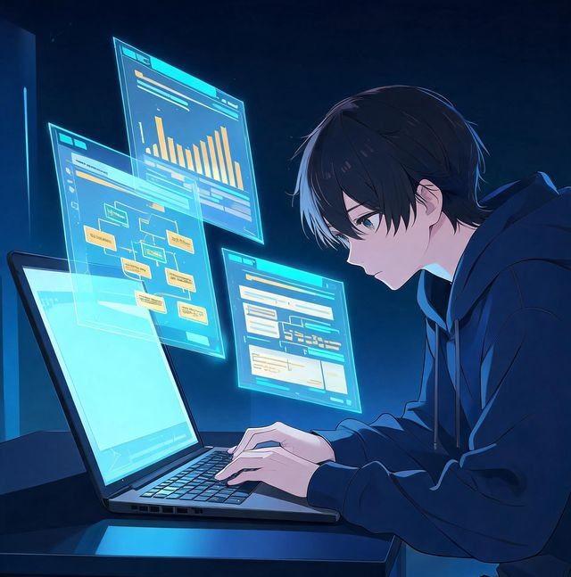
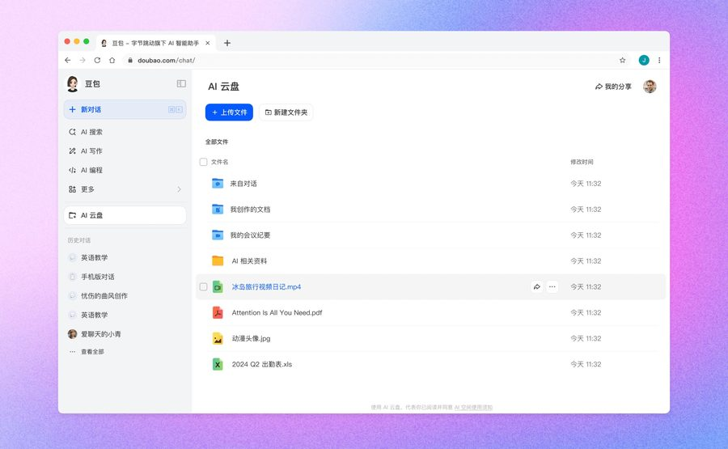
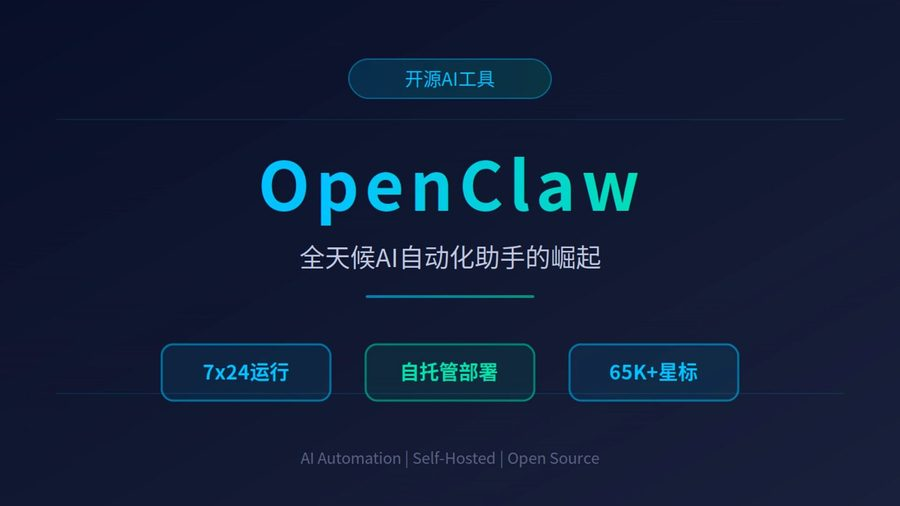

星辰超级智能体 TeleAgent
AI EMPOWERMENT · FUTURE READY｜中国电信自研 · 央企出品 · 安全可靠
教育行业 · 高校专场 人工智能专题讲座 计算机专业定制课
AI搭子
把杂活丢给AI —— 从大模型到智能体，计算机专业的 AI 进化课
01 精读文献02 随堂补学03 计算机考试04 数据处理05 毕业答辩
60分钟，五步走：看清它 → 用上它 → 赢比赛 → 守住它 → 望远方
不念概念，只走真流程。前半场看清 AI 的边界与方法、现场看真干活；后半场打通竞赛攻略、代码安全、未来路线 三件大事，最后人人动手。
傅
本期讲师：傅老师（傅玮）——计算机科班出身的"师兄视角"
北京邮电大学本科、福州大学硕士，高级工程师；现任中国电信福建公司政企 AI 专员、省政企"AI+"行动专题牵头责任人，带队 16 人做 AI 落地。今天演示的 TeleAgent，就是他和属地团队每天在产线上用的工具——不讲玄学，只讲你们毕业前就能用上的真本事。
第一篇章 12 min
01
看清它：AI 时代全景与前沿技术 ——从范式革命、大模型、生成技术到智能体，看清这波浪潮从哪来、到哪去。
AI 全景：三波浪潮与范式革命
大模型四时代 · 生成技术三线并进
智能体：大脑＋工具＋循环
TeleAgent：全场唯一工具介绍
第二篇章 15 min
02
用上它：五大场景真操演示 ——文献、补学、计算机考试、数据、答辩，每场现场跑一遍。
四步演示法：丢任务→老办法→真操→算账
计算机加餐：代码生成·审查·调试
演示纪律：AI 会编，你得核
每场配提示词，拍照即可抄走
第三篇章 10 min
03
赢比赛：竞赛地图与参赛攻略 ——创意大赛规则、评分五维、五步实战，加一份计算机竞赛全景。
评分五维＝你的发力点
蓝桥杯·CCPC·计算机设计大赛
顺手带走一份计算机竞赛日历
五步实战走全程，屏上步骤可拍照
第四篇章 8 min
04
守住它：AI 时代的代码安全 ——别的讲座不讲的一课：AI 写的代码，谁来查？怎么查？
真实审计报告逐条拆解
人机协同工程纪律 BGHKM
人无我有：源代码安全＝加分项
参赛避坑五条，一个都别碰
第五篇章 15 min
05
望远方＋现场实操 ——四次跃迁看懂行业走向，四条就业线对号入座，最后动手做一件正事。
大模型→智能体→多智能体→具身智能
任务三选一，做出能截图的作品
今天结束：作品存在，方法带走
学术伦理三不＋四条就业线
开场热身
30 秒录音，看谁记得全——待会儿让 AI 证明：它 3 秒记得全，还能整理成纪要
第一篇章 · 看清它
AI 时代全景 · 从达特茅斯到范式革命
2 min
AI 时代全景：七十年，三波浪潮，两次寒冬，一次范式革命
1956 年达特茅斯会议提出"人工智能"——此后浪潮与寒冬交替，直到 Transformer（2017）点燃、ChatGPT（2022）引爆 ；看懂历史，就懂今天。
浪潮 时间 核心思想 标志性事件 局限与教训（两次寒冬的根源） 第一波 1956—1974 知识用符号表示、推理用规则引擎驱动——"把专家知识写成规则存进计算机，它就能像专家一样思考" 1957 罗森布拉特发明感知机 ；1980s 专家系统商业化；1997 IBM 深蓝 击败国际象棋世界冠军卡斯帕罗夫 真实世界知识无法穷尽成规则，知识获取瓶颈难破→第一次寒冬 ；逻辑推理容易，感知与运动极难（莫拉维克悖论 ） 第二波 1980—2010s 统计学习＋深度神经网络——"不再手写规则，让模型从数据中学特征"，从规则定义跨越到特征学习 1986 辛顿等重新发现反向传播算法 ；2012 AlexNet 引爆深度学习；2016 AlphaGo 击败李世石 黑盒难解释；依赖海量标注；缺常识推理、泛化差→第二次寒冬 ：单点突破撑不起通用智能 第三波 2017—至今 生成式预训练＋具身智能——Transformer 统一架构、LLM 通用语义表征，涌现能力 出现，进入物理世界认知与行动闭环 2017 Google 提出 Transformer ；2022 ChatGPT 两月破亿用户；2024 诺贝尔物理/化学奖双颁 AI 学者 ；2026 智能体与具身量产元年 新命题：幻觉与可解释性、算力与成本、安全与对齐——但这一次，浪潮由通用性驱动，未见拐点
7亿+
全球生成式 AI 用户（CNNIC 2026）——每两个中国人，就有一个在用
50%+
普及率已过半——AI 从黑科技变成基本素养
1万亿$
2026 全球 AI 投资量级——英伟达市值站稳 5 万亿美元
60+年
规则→学习→涌现：每一波都站上上一波的肩膀
此前 AI 是"碎片化专才"：文本、视觉、音频、逻辑各管一摊。这一波跃迁为全域通用"通才" ：①从碎片到统一——跨领域处理能力；②从识别到理解——"标签分类"升级为常识级"语义对齐"；③从统计到逻辑——在统一表征空间建立物理常识 。
感知（输入） ：多模态构建物理环境的高保真数字孪生；决策（逻辑） ：Agent 自主拆解任务、规划路径、长程推理；执行（输出） ：数字指令转化为物理动作，精准干预现实。人类定义目标，AI 完成任务链条 ——"协助"而非"替代"：解放机械重复劳动，让人专注决策与创新。
前两波靠人写规则/人标数据 堆出"特定任务自动化"。这次本质区别三条：①Scaling Law ：参数×数据×算力同步放大，能力随规模涌现——GPT-3 参数是 GPT-2 的 117 倍，Few-shot"无中生有"；②通用性 ：一个底座写代码、看片子、做规划、开机器人；③行动性 ：模型之上装"手脚"（智能体）与"身体"（具身），从"会说话"到"会做事"。技术、产业、政策三线首次同频 。
第一篇章 · 看清它
认知底座 · 大模型的四个时代与全球格局
2 min
大模型：从架构之争到智能体时代，多强并立、国产崛起
全球 AI 模型市场约 6120 亿美元 （+40%）；ChatGPT 月活超 11 亿但份额跌破 50%——海外 GPT-6、Claude 5.5、Gemini 4 三强缠斗，国产 DeepSeek V4.1、GLM-5.3、Kimi K3 集群崛起：能力收敛后，竞争转向生态与成本。
2018-2019 架构之争 编码器/解码器可拆开单独用：BERT 双向"填空"（极致理解）；GPT-1/2 赌自回归"续写"（生成即智能）——两条路线 2018 年分野。
2020-2022 暴力美学 GPT-3 参数 1750 亿 （117 倍于 GPT-2），Scaling Law 验证；Llama 定义开源"小而强"，埋下开源种子。
2023-2024 多模态爆发 GPT-4 图文多模态、GPT-4o 统一文本音频图像；DeepSeek 以 MoE 架构 极低成本冲进第一梯队，开源反击战开打。
2025-2026 推理与智能体 o1/GPT-5 引入 RL 思维链攻克奥数难题；GPT-6、Claude 5.5 推智能体走向"主动式"（Duet 关机也干活）——为智能体时代铺路。
厂牌 性格定位 代表模型 优势领域与"对你的用法" OpenAI 暴力美学 · 全能全知 GPT-6 / o3 综合生态与推理天花板，Codex 成开发者标配——复杂推理与创意，成本较高 Google 多模态王者 · 工程基石 Gemini 4 Argon 百万 Token 上下文 ，HSS 55.4% 登顶，输入约 2 美元/百万 Token——长文档与预算敏感Anthropic 文人风骨 · 编程大师 Claude Opus 5.5 Agentic Coding 事实标准 ，Claude Code 成标配；5.5 驱动 Duet 主动智能体Meta 开源教主 · 社区核心 Llama 4 本地部署微调生态最成熟——竞赛项目零成本本地跑 ；开源头名让位国产 DeepSeek 性价比之王 · 算法极客 DeepSeek V4.1 V4.1-Flash 登顶 Code Arena 开源榜 ——国内部署与参赛务实之选智谱 Z.ai 开源新王 · 编码极客 GLM-5.3 / 5.2 5.2 开源横扫、采用速度超 DeepSeek V4；5.3 编码最强开源——国产首选 月之暗面 长文本之王 · 上下文专家 Kimi K3 万亿级 MoE＋顶级长上下文 ，AI 办公软件争相接入——长文档利器MiniMax 多模态卷王 · 速度狂人 M3.1 Flash Space Bunny 处理 200T+ Token 登顶 OpenRouter；速度 3 倍价降 70
①预训练 学知识：海量语料玩"猜词"接龙；②SFT 学回答：问答对教它"听懂指令"；③RLHF 学偏好：人类反馈强化，让输出得体合规。
从"翻译官"到"视觉直觉"：早期"视觉→文字→推理"接力有损；原生多模态把图像语音文本放进同一表征空间 ——直接理解像素与语义，跨模态联合推理。
System 1 直觉：快但易错，适合闲聊润色；System 2 逻辑：慢但可靠，先规划再执行、可自验证。o1 用 RL 训练"隐形思维链"让模型三思而后行 ，是 Agent 灵魂。
选模型＝选性格，先定任务再定厂牌 ：写 Agent 看推理与工具调用 ；竞赛看成本与部署自由度 ；研究看长上下文多模态 ；国内优先国产；能力收敛后工程化是差异化 。
第一篇章 · 看清它
认知底座 · 生成技术三线并进
2 min
生成技术三线并进：更美 · 更真 · 更立体
2026 年的分水岭：视频生成价格从"元"降到"分"、4K 直出成为标配 ——生成质量的竞争天花板从"像不像"转向"物理一致性" ：图像拼美学、视频拼物理、3D 拼几何。
图像生成 从"美"到"准"
原理一句话：扩散模型 训练时往图片里"加噪"再学"去噪"；生成时从纯噪声一步步还原 出图——所以能"无中生有"，也能对已有图局部重绘（一句话改图、补图、换风格）。
AI 之"美"：视觉巅峰 光影、构图、材质达到专业级——海报、插画、概念设计一句话生成，普通人的创意表达门槛被铲平 ；文生图模型（如 Nano Banana 2）已挂载实时搜索，生成内容可与时事秒级同步。
AI 之"准"：工业可用 结构理解（透视、几何一致）、多参考图控制（十余张混合参考）、精准编辑——广告、电商、教辅配图进入工业量产 阶段。
对计算机专业的意义 前端原型、可视化素材、竞赛 Demo 配图从"找图"变成"生成图" ；但生成内容能以假乱真——鉴伪与溯源成为新技能 ，版权与真实性底线必须守住（第四篇章细讲）。
视频生成 从"像"到"物理一致"
Seedance 2.0（字节·即梦） 2026 年 2 月上线，图/文/音/视四维混合输入、最多 12 个参考文件 ：跨场景角色一致性、自动分镜、导演级运镜——历史痛点（动作崩坏、音画割裂）逐一解决；90% 首次尝试即获可用素材，成本削减 90%、周期压缩至分钟级 ；马斯克转发点评"进展太快"。
Kling 4.0（快手·可灵） 2026 年 9 月内测：单次原生视频拉到 30 秒、4K 画质 ；轻量版 Flash 主打出片速度——"控制力"成为卖点：指定镜头运动、参考动作、背景音乐皆可精确操控。
群雄并起 Vidu Q4 （生数科技）：15 张参考图＋3 段参考音频、4K 直出；通义万相 （阿里）接入电商生态；OpenAI Sora 2 以神经物理引擎模拟流体与碰撞——各家 API 形态趋同：提交任务→拿 task_id→轮询结果，工程接入已标准化 。
行业拐点：拼"导演思维" 价格从"元"降到"分"后，下半场拼的不是"会不会生成"，而是叙事控制力 ：长叙事、分镜调度、音画同步——会用 AI 导演的人，比会用 AI 生成的人稀缺 ；下一站 Seedance 3.0 目标 10 分钟长叙事。
3D 生成 从计算空间到管理资产
三代技术演进 ①多边形光栅化 （经典 Mesh）：GPU 投影硬几何——快、可交互，但难表达毛发烟雾，照片级还原成本极高；②NeRF 隐式神经场：不存几何只存网络权重，光线步进采样——照片级还原、处理透明折射，但算力黑洞难上手机；③3D 高斯泼溅（3DGS） ：数百万"智能椭球"瞬时泼溅到屏幕——移动端实时渲染、易编辑，能模拟玻璃烟雾毛发。
世界级玩家 李飞飞创办的 World Labs （"3D as Code"直接生成可导出的强几何一致性 3D 场景）、Google DeepMind 的 Genie 3 （可交互世界模型）、英伟达 Cosmos （工业级世界基础模型）——3D 生成正与"世界模型"合流。
落地场景 电商 3D 展示、文旅数字孪生、影视虚拟制片、机器人仿真训练场 ——生成场景可直接导出到 Omniverse 等引擎，成为具身智能的"驾校"（第七页呼应）。
一句话总括 三线并进的共同终点：从"生成内容"到"理解并重建物理世界" ——图像给你眼睛看到的，视频给你世界里发生的，3D 给你可以在其中行动的空间。
第一篇章 · 看清它
决策大脑 · AI Agent 从概念到规模化落地
2 min
AI Agent：从"回答问题"到"完成工作"的关键跃迁
2026 是 Agent 规模化落地元年——Gartner：2026 年底全球企业级智能体市场突破 1800 亿美元（中国占 35%），40% 企业应用将内置任务型 Agent （2025 年尚不足 5%）；信通院：中国企业级 Agent 市场 212 亿→449 亿元一年翻倍。
普通模型 ：告诉你有哪些航班——但不保证现在还有票；智能体 ：登录官网 → 发现没票 → 自动搜索候补 → 刷出余票 → 推送到邮箱。差别不在"聪明"而在闭环行动能力 ——外面一问一答，里面跑了三圈（读文件→查日历→资料够了才输出）。这就是从"自动化工具"到"数字员工" 的跃迁。
① 大脑 ：大模型负责理解/推理/生成（GPT-5.5、Claude 4.6、DeepSeek V4、Qwen 等）；规划器 Planner ：把复杂目标拆解为可独立验证的原子任务序列，预判风险；记忆 Memory ：向量库＋图数据库沉淀长期业务知识与历史经验，长短期记忆隔离；工具层 Tool Use ：通过 MCP 协议 （JSON-RPC 标准化）调用外部系统——Host 管人机上下文、Client 管协议调用、Server 管能力数据，搜索/文件/数据库/API 即插即用。规划 Plan（拒绝拍脑袋）→ 执行 Act（拒绝空谈）→ 观察 Observe（拒绝闭目）→ 反思 Reflect（拒绝固执） ——错了会回头改方案再试。
工作流 Workflow ：代码控流程、模型做节点——确定、可审计、成本可控，适合标准化 SOP；Agent ：模型自己决定下一步——灵活、能处理长尾任务，但要防失控。工程实践是混合式 ：主干用工作流锁确定性，叶子节点放 Agent 处理开放性。
1800亿$
2026 全球企业级中国占比 35%
449亿元
2026 中国企业级 Agent
3.5亿个
2031 中国活跃智能体
40%
2026 底内置任务型 Agent
麦肯锡判断：未来 AI 七成以上产业价值来自垂直行业的实景落地，而非通用对话。 现象级样本 OpenClaw ：黄仁勋称"史上最重要的软件发布"；狂热玩家日烧 10 亿 Tokens 盯运行日志；几个月前不会写代码的 PhD 用 Agent 搭出实验室管理系统；甚至出现"给智能体用的婚恋软件"——Agent 出现"社会化"特征：主动提问获取上下文、Agent 之间互相协作慰藉。你的机会窗口：会用 Agent 编排的人正在接管不会用的人的工作流 ——今天的 TeleAgent 演示，跑的就是同一套"大脑+工具+循环"架构。
第一篇章 · 看清它
物理执行 · 具身智能的量产元年
2 min
具身智能：2026 量产元年，AI 长出身体
核心转变：Internet AI 学"关于世界的知识"（文本与像素），Embodied AI 通过"与世界的交互"学习 （力、触觉与空间感知）——"真正的智慧不是读出来的，而是'摸'出来的"；运行链路：感知 Perception → 规划 Planning → 动作 Action → 物理反馈 Feedback。
2.3万台
2026 上半年全球人形机器人出货（量产超 3 万台）
80%
2025 全球装机约 1.6 万台中
140家
中国整机企业数·产品超 330 款
+508%
2025 全球人形机器人
- 宇树科技 ：电机/减速器/控制器核心零部件全自研自产；四足机器狗已在电力巡检、矿山勘察、应急搜救大规模交付 ；2025 年人形机器人终端发货超 5500 台 ；2026 年 8 月 19 日以"人形机器人第一股"登陆科创板，市值一度 4449 亿元波士顿动力 Atlas ：CES 2026 亮相量产版——全电动、身高 1.88 米、负载 50 公斤特斯拉 Optimus ：2025 Q3 试产不足 1000 台；Figure 全年出货约 150 台——中国厂商出货量级已反超海外
工信部明确：未来两三年是人形机器人从试点走向小规模批量落地的关键阶段 。与 Agent 元年形成呼应——数字员工进办公室（Agent），物理员工进车间（机器人），两条线同时展开 ；对计算机专业的信号：机器人算法、仿真工程、数据闭环岗位正在放量，"计算机＋机械/电子"复合背景溢价最高。
① 远程遥操作 ：操作员戴 VR 或动力反馈手柄（如 ALOHA 系统）远程控制机械臂，同步记录全部传感器数据——质量高（直接获取专家级操作逻辑）但人力成本极高、无法大规模并行；② 视觉观察 ：从海量视频/动作捕捉还原三维动作序列——数据量大（视频无穷无尽）但缺力反馈，存在"视角偏差"；③ 自主探索 ：机器人像婴儿一样随机尝试——全自动、覆盖长尾场景但效率低、易损坏硬件。产业界主流＝协同采集（Co-robotics） ：多台低成本机械臂（Mobile ALOHA）众包并行，快速积累千万级轨迹数据，兼顾质量与规模。
学习范式合力 ：模仿学习打底（行为克隆"照猫画虎"→ Diffusion Policy 用生成式扩散解决动作多峰分布——面对同一个杯子，从左抓还是从右抓不再纠结，动作更丝滑）；强化学习精进（IQL 离线 RL ：从离线数据直接学最优策略，不用在线试错、保护昂贵硬件；流程＝模仿预训练→离线 RL 精调→少量在线微调→部署）。Sim-to-Real 跨"死亡大峡谷" ：仿真与现实的摩擦力/材质/光影总有细微偏差——领域随机化（疯狂改变纹理质量参数让模型"见多识广"）＋ NVIDIA Isaac Lab GPU 并行仿真（数千环境同时训练，"仿真一小时、现实一万年"）。
第一篇章 · 看清它
科学加速 · 世界模型与 AI for Science
2 min
科学加速：从"复读机"到"世界模拟器"
当前 AI 能写论文、写代码、生成顶级画面，但缺乏理解、预测世界并在推演中行动 的能力——OpenAI、Google、微软与 Yann LeCun、李飞飞等顶尖学者都在抢答同一道题：世界模型，让 AI 从"生成像素"进化到"理解因果"。
世界模型＝学习物理世界规律的内部表征系统 ：不只预测下一个像素（Next Pixel），而是通过因果律（Causality） 在潜空间预演"未来会发生什么"。传统 AI ：看照片识人——静态感知，无时序推理；世界模型 ：接球前大脑预判球的飞行轨迹——动态模拟，因果推演。架构上 V-M-C 三组件闭环 ：V 视觉感知（压缩环境信息）→ M 预测记忆（在潜空间推演未来）→ C 行动控制（基于预演做决策），反馈回流。演进四步 ：经典控制与 MBRL（查找表，仅处理低维输入）→ 潜空间想象觉醒（VAE＋RNN，智能体在"梦境"中进化）→ 大规模生成式模拟（Sora/Gen-2 证明视频生成即隐式物理建模）→ 空间智能与物理对齐（从"视觉像不像"转向"几何是否一致"）。与 LLM 的关系 ：LLM 帮你处理信息，世界模型帮你预演现实——未来将融合为"语言＋物理直觉"的统一底座。
当前四大学派 代表 · 原理与优势 潜空间动力学派 DreamerV3、Genie 3——RSSM 结合确定性（历史记忆）与随机性（未来不确定），支持 24fps+ 实时交互 联合嵌入预测派 V-JEPA（LeCun 路线）——放弃生成像素、预测抽象特征，计算效率极高，通往 AGI 的推理路径 空间智能几何派 World Labs（李飞飞）——"3D as Code"生成可导出场景，是理想仿真底座 通用生成式物理派 NVIDIA Cosmos、Sora 迭代版——视频自监督自发产生重力/碰撞/质量感知，服务自动驾驶极端案例模拟
里程碑：2024 年诺贝尔奖双授 AI ——物理学奖授予 Hopfield 与 Hinton（神经网络奠基），化学奖授予 DeepMind 的 Hassabis 与 Jumper（AlphaFold 蛋白质结构预测 ，此前 AlphaFold2 已被《Nature》《Science》评为 2021 年度科学突破之首，预测结果开源惠及全球）。方法论跃迁 ：① 多模态科学知识融合 ——PDE 方程、异构实验数据、科技文献统一语义编码，打破学科孤岛；② PINNs 物理告知神经算子 ——超越传统数值模拟，流体/电磁/应力瞬时演化推演；③ 生成式逆向设计 ——按目标性能反向催生新材料分子拓扑。产业实证 ：英矽智能依托 Pharma.AI 从立项到候选化合物提名仅需 12-18 个月（传统制药 2.5-4 年） ；材料筛选、气候预测、分子动力学模拟全面进入科研流程。
近年主线是证明模型"能做"——能预测结构、筛出成千上万候选材料、自动规划合成路线；但生成候选的速度提升了几个数量级，实验验证的速度没有跟上 ——"预测很快、验证太慢"正在成为决定成果含金量的关键变量。CCF 等学界共识：AI4S 下半场要解决数据质量、湿实验闭环、可信验证 三个问题——这恰恰是计算机专业能发力的地方：把"验证流水线"做成工程，就是新的岗位机会。
① 认知底座 （大模型/多模态/慢思考）＝你们已经在用的工具；② 决策大脑 （Agent）＝今天下午实操的主角；③ 物理执行＋科学加速 ＝未来十年新增的岗位富矿——机器人算法、仿真工程、AI4S 研究工程。从"看清它"到"用上它"，只差动手——下一篇章开始实操。
一个被关在服务器里的超级大脑，按概率"接话"——聪明是真聪明；但断网、没手、出不去、会幻觉 ，"惨"也是真惨。每一"惨"都有对应解药 ：这一页把成因和解法一次讲透，落到 RAG 与私有化。
训练数据有截止日期 ，时事不知道——靠联网检索补。
只会"说"不会"做" ——文件操作靠智能体工具调用。
不能发邮件、交表单 ——行动能力是智能体第二生命。
逐词"接龙"的副产品：只预测最可能的词，不验证事实 ——训练语料没有的，它就按概率"编"一个像的：文献、函数、API 编得有模有样。加上知识截止、张冠李戴、上下文污染 三条放大器，幻觉无法根除，只能工程化压制。
第一层 · 提示词纪律 （今天就能用）：①交叉验证——同题问两家或联网核对；②要求出处——"给出处，找不到就直说"；③抽样复核——引用、数据、代码逐条抽查。第二层 · 架构级方案 RAG （右侧整块）：让模型"开卷考试"——答案必须来自你的资料，检索在先、生成在后 。这正是"大模型＋你的知识库"的互补关系：大模型懂语言、会推理；RAG 管事实、管出处。
你的文档 课件/论文/规章
→
分块向量化 语义切块入索引
→
提问检索 召回最相关片段
喂给大模型 只准基于片段答
→
答案＋出处 带页码可反查
→
无依据拒答 "资料里没有"
知识图谱补一刀 ：RAG 管"找到原文"，知识图谱管"关联推理"（实体-关系网络，跨章节/跨文档问答）——两者结合是当前企业知识库的标配架构，也是毕设/竞赛的高频选题。
- WeKnora（腾讯开源 · 13.7K Star） ：ima 的技术内核开源版——多模态文档解析＋混合检索＋受限生成一条龙，Docker 一键起，企业级知识库开箱即用腾讯知识图谱 / LLM Wiki 类知识库 ：把分散文档沉淀为可查询、可推理的知识资产；TeleAgent 知识库能力 同理：丢进课件即建库，问答带出处LangChain / LlamaIndex ：自己搭 RAG 的两大框架——课程项目与毕设的主流选择
结论
大模型通用但不知你的私事 ，RAG/知识库私有但不会说话 ——两者互补才是落地正解；数据不出域的私有化部署（本地/信创）随之成为政企与科研的刚性底线 ，这正是 TeleAgent 私有化版的逻辑。
第一篇章 · 看清它
基础认知 · 智能体
5 min
再说智能体：三步，让大脑动起来
光有脑子不够，得给它装上手脚。智能体（Agent）＝ 大模型 ＋ 工具 ＋ 循环调度 ：接到任务先拆解，再调工具，拿结果，再想下一步。
01
你当它的手和眼 它说查啥你查啥，查完贴回去——最原始的人机协作：查一次贴一次，人在中间当"传话筒"，累但能动。
02
把跑腿的活换成程序 搜索、读文件、执行代码、查日历、发邮件全套配上——工具调用（Tool Use），模型学会"按需伸手"。
03
定好格式，自己跑圈 想 → 调工具 → 拿结果 → 再想——循环调度直到任务完成；中途报错会自己换路子，这就是 Agent 与聊天机器人的分水岭。
大脑 （大模型：理解/推理/决策——GPT-5.5、DeepSeek V4、Qwen 都能当大脑）＋ 手脚 （工具调用：读写文件、执行代码、联网搜索——通过 MCP 标准协议即插即用）＋ 记忆 （记住你的专业、偏好、正在做的项目——短期记忆管当前任务，长期记忆管"你是谁"）＋ 闭环 （观察→行动→反思→再行动，干完活回头验收，错了自己纠偏）。工程意义 ：这四件套就是 Agent 开发的 checklist——缺哪件，能力就瘸哪条腿。
你说："根据这个项目文件夹的文档，总结下周要做什么；再查查日历有没有冲突。"
// 你只看到：问一次，答一次 01 调用[读文件工具] → 拿到项目文档全文02 调用[日历工具] → 拿到下周日程安排03 自检 → 发现漏了实验室安排 → 再调一次[日历] 04 对照日程 → 标出 2 处时间冲突05 资料够了 → 输出最终答案＋复习安排表 // 外面一问一答 5 秒，里面跑了 5 圈——这就是智能体
真机演示
现场跑一个立等可取的任务："总结这个文件夹里的课程资料，生成下周复习安排" ——投屏看它内部一步步调工具的全过程。
第一篇章 · 看清它
工具介绍 · 全场唯一一次
2 min
今天所有演示，用的是同一个工具：TeleAgent 智能体
中国电信自研的星辰超级智能体。今天它有三种身份：高效助手（干杂活）、专属老师（随时问）、万能工具（都能干） ——先看真实界面，再拆它的架构。

▲ TeleAgent v2.7.0 桌面端真实界面：你说我做，随时待命——左侧历史任务，右侧做调研 / 做表格 / 搭应用 / 写文档 / 替我办，下方对话区选"本地知识库"即建即答
核心框架 ＝Agent Core（规划与执行框架＋记忆系统）＋ 技能 / 脚本与工具 / MCP 客户端 ；三个外延＝通信软件 （微信/企微/飞书/钉钉，经消息渠道，量子加密 保障）、基础大模型 （电信星辰/其他，经模型网关）、互联网工具服务 （技能社区/网站 API/MCP 服务端）。
MCP ：模型上下文协议——工具接入的"USB 口"，写一段 JSON 就能给智能体接上新工具（企业 API/数据库/SaaS）；SKILL ：可复用的"技能包"——官方广场一键安装，也能把你的流程沉淀成自定义技能（今天演示的 xlsx/pptx 都是技能）；量子加密 ：通信软件层资产与通信安全保障（官方架构标注）。
⬇
扫码立即下载 ：agent.teleai.com.cn（手机/电脑均可装）——今天现场装，实操环节立刻用上。

第二篇章 · 用上它
五大场景 · 现场真操，不空谈
1 min
五个场景练手，一套工具上场：学习侧＋参赛侧一次讲清
上半场学习侧 ：海报五大主题逐个现场真操（丢任务→老办法→真操→算账）；下半场参赛侧 ：用同一套工具打创意大赛——工具索引见页面底部。
01
精读文献
论文 PDF、技术文档、开源项目 README——提炼要点、生成综述框架。▶ 丢给TA： "这篇论文四段式拆解＋创新点3条带页码"
结构化拆解 综述框架 引用可反查
2小时 → 8分钟
02
随堂补学
课件、录播一键变知识库，随时问答复习，秒出课堂总结＋复习题。▶ 丢给TA： "今天的课件建库，出5道自测题"
课件转知识库 难点追问 自测出题
一节课45分钟 → 13秒总结
03
计算机考试
期末专业课 · 等级考试 · 软考——考点归纳、错题整理、模拟自测。▶ 丢给TA： "这批错题做根因分析＋复习计划"
错题根因 复习计划 每日抽问
一晚上 → 当场出表
04
数据处理
实验数据、问卷数据杂乱？表格自动清洗分析，一句话出图表。▶ 丢给TA： "12个CSV合并出对比图＋结论"
多表合并 清洗透视 图表直出
两天 → 10分钟
05
毕业答辩
毕设文档 → 答辩 PPT 一键生成，模拟提问陪练，预设评委问题。▶ 丢给TA： "按10分钟结构生成答辩PPT＋8个预设提问"
PPT生成 模拟提问 演示彩排
2小时 → 10分钟
场景① 精读文献：论文读不动？让 AI 先啃一遍给你划重点
01 丢任务 研读一篇论文
→
02 老办法 精读2小时起步
→
03 现场真操 30秒结构化拆解
→
04 算账 2小时 → 8分钟
啃一篇技术论文 / 一份长技术文档 / 一个开源项目的 README：筛选、摘录、梳理框架挤占大量时间，关键证据还容易漏。综述写到一半发现漏读了三篇核心文献。
1
论文 PDF 拖进对话 → 30 秒结构化拆解 输出背景 / 方法 / 结果 / 局限四段摘要——原文没有的字段老实标 Not specified，不添油加醋 。
2
批量文献 → 综述框架 几十篇文献建库，提炼研究脉络与争议点，生成带真实出处的综述框架——署名与拍板是你的。
3
开源项目文档 → 快速上手指南 README + 接口文档丢进去，生成"这个项目怎么跑、核心模块在哪、我要改哪里"的速读卡。
▸ 提示词（可直接抄）： "这是 Transformer 奠基论文《Attention Is All You Need》（arXiv 1706.03762）。请输出：①四段式结构化摘要（背景/方法/结果/局限）；②自注意力三条核心创新——缩放点积 Q·K·V、多头并行、正弦位置编码，每条注明原文页码；③图1/图2/表1分别说明什么；④3.2.2 节 Multi-Head 头数 h=8 的原文依据。原文没有的信息标 Not specified，禁止编造。"
算账
2 小时 人工精读一遍＋摘录
→
8 分钟 结构化解读＋引用线索
📄
现场演示用真论文：《Attention Is All You Need》 （Transformer 缎基论文，arXiv 1706.03762）——今天 PPT 里每一个"Transformer"都出自它；PDF 已备好，也可扫码取电子版。
点击打开
真机演示
现场投屏：把这篇论文交给它拆解，再现场核对一处引用是否真实 ——AI 给的每条文献都要能反查。
场景② 随堂补学：课件一键变知识库，课没听懂的地方随时问
01 丢任务 45分钟录播课
→
02 老办法 再刷一遍视频
→
03 现场真操 13秒出总结
→
04 算账 45分钟 → 13秒
《数据结构》的平衡树没听懂？《操作系统》的页面置换算法没跟上？录播课不能下载、二倍速也嫌慢；想问问题，下课了找不到人。
1
课件/讲义丢进去 → 秒变结构化笔记 一节课的内容提炼成知识框架＋重点清单＋3 道自测题——13 秒 = 一节课的课堂总结 。
2
课程资料建知识库 → 随时问答复习 把整门课的课件、笔记、代码存进知识库；考试周问它"进程与线程的区别，期末怎么考"，它按你的资料回答。
3
难概念换个讲法 "用三种说法讲红黑树，讲到我懂"——第一遍类比、第二遍图示、第三遍代码视角。
▸ 提示词（可直接抄）： "这是我《数据结构》第9章的课件。请输出：①本章知识框架图；②5个必考知识点，每个配1道自测题；③我上次的错题是'AVL树旋转'，请针对它出3道递进练习。"
算账
45 分钟 录播课二倍速刷一遍
→
13 秒 课堂总结＋3 道复习题
📖
演示素材：李开复《AI·未来》电子书 （10.6MB）——现场整个丢给 TeleAgent："总结本书核心观点＋对计算机专业的启示"，看它几分钟拆完一本书。
点击打开
现场实录 录播课转写 → 智能体萃取知识点 → 生成复习题全程：13 秒 = 12 分钟课堂总结＋3 道复习题
场景③ 计算机考试：考点归纳、错题整理、模拟自测
01 丢任务 真题+错题一堆
→
02 老办法 整理一晚上
→
03 现场真操 当场出表
→
04 算账 一晚上 → 当场出表
期末专业课（数据结构/操作系统/计算机网络）、全国计算机等级考试 NCRE （二级 C / Python）、软考 （程序员 / 软件设计师）——真题刷了一堆，错在哪、考什么、怎么复习，全靠感觉。第四条赛道：工信部教育与考试中心《人工智能应用工程师》职业证书 （初/中/高级，全国通用、官网可查）——AI 时代的"软考"，题库覆盖机器学习、深度学习、大模型应用，今天的错题根因法同样适用。
1
错题拍照/导入 → 根因诊断 不止给答案：按知识点归因（概念不清？边界漏判？复杂度算错？），统计 Top5 薄弱类型。
2
考纲 → 考点归纳 + 30 天复习计划 逐章拆考点权重→阶段任务＋每日安排；考前一周自动切换高频考点速记卡。
3
每日模拟自测 → 抽问打卡 每天 5 题打卡抽问，答错自动回归错题本；模拟卷带难度梯度与解析。
实操任务A
今天实操环节选这个任务：自己的真实错题丢给它，当场出根因表 ——学完就用。
▸ 提示词（可直接抄）：
"我在备考 NCRE 二级 Python，这是 20 道错题（拍照导入）。请输出：①根因分析表（题号/考点/错误类型/订正要点）；②按考纲生成 30 天复习计划；③每周日出 5 道模拟题抽问我。"
算账
一晚上 手工整理＋凭感觉计划
→
当场出表 根因＋30天计划＋抽问卡
现场实录 错题导入 → 根因分析 → 30 天复习计划当场出表（原版演示为考研复习场景，方法与计算机考试完全通用）
场景④ 数据处理：表格自动清洗分析，一句话出图表
01 丢任务 杂乱实验数据
→
02 老办法 整整两天
→
03 现场真操 一句话清洗+出图
→
04 算账 两天 → 10分钟
课程实验的原始数据散在十几个 CSV；问卷调研几百条记录带空值带重复；要出一张能放进实验报告的图表，先学半天 pandas 语法还是先拖 Excel 公式？
1
一句话清洗规范 "去掉重复行、补空值、统一时间格式"——杂乱数据自动清洗，格式无损、零函数门槛 。
2
多表合并 → 汇总透视 十几个分表一键合并、分组透视、交叉统计，直接生成处理好的数据表。
3
图表直出 → 自动解读 柱状/折线/热力图随口指定，配一段"这张图说明什么"的分析文字，可直接放实验报告。
4
从 Power BI 到 TA：门槛归零 老路＝学 Power Query/DAX 建模＋拖拽可视化（半天起步）；新路＝自然语言一步到位 ：合并→透视→出图→结论。配飞书智能表格更顺：TA 的 IM 渠道一键打通飞书，"把飞书多维表格按季度透视出图"一句话完成 ，结果回写表格。
▸ 提示词（可直接抄）：
"这个文件夹有12个实验数据CSV。请：①合并成一张总表，按实验组统计均值/标准差；②清洗重复与空值并说明规则；③按'响应时间对比'出一张柱状图，附50字结论。"（飞书版：把提示词里的文件夹换成"飞书多维表格《__》"，TA 直接读取回写）

▲ TA 一句话生成的 BI 风格看板（示例渲染）：合并12表→清洗→柱状图＋KPI卡＋阈值预警＋自动结论——传统 Power BI 半天的活
算账
整整两天 学语法＋逐表清洗制图
→
10 分钟 合并清洗出图＋自动解读
场景⑤ 毕业答辩：答辩 PPT 一键生成，模拟提问陪练
01 丢任务 毕设文档+系统
→
02 老办法 各熬2小时
→
03 现场真操 PPT+陪练一次出
→
04 算账 2小时 → 10分钟
毕设论文改到第七版，答辩 PPT 还没开始做；更慌的是评委提问——"你的系统并发瓶颈在哪？""为什么选这个框架？"没人陪练，全靠自己脑补。
1
毕设文档 → 答辩 PPT ＋ 讲稿 按答辩时长（10分钟版）生成结构化 PPT 与逐页讲稿——技术路线图、系统架构图直接成页 。
2
模拟提问陪练 生成评委最可能问的 8 个问题＋参考回答要点；再开"追问模式"——答完一问追问一问，专治只会背稿。
3
系统演示彩排 生成演示动线脚本：先演示哪个功能、准备哪个兜底录屏、3 分钟怎么分配——计算机毕设答辩，系统演示环节同样值得彩排 。
▸ 提示词（可直接抄）： "基于我的毕设论文（配套示例《课答答》见下方下载），生成：①10分钟答辩PPT大纲与逐页讲稿（风格参照红白风模板）；②评委最可能提的8个问题（技术选型/创新点/不足各2个以上），每题给回答要点；③系统演示环节的3分钟动线脚本与兜底方案。"
算账
各 2 小时 PPT 一通宵＋提问靠脑补
→
各 10 分钟 PPT＋讲稿＋8 题陪练
🎓
配套资料即存即用： ①毕设示例《课答答——基于RAG的校园课程问答系统》；②红白风 PPT 模板；③按示例真实生成的答辩 PPT 成品（10页：背景→架构→测试→QA） ——点开即演示。
毕设示例
PPT模板
答辩PPT成品
真机演示
现场投屏：一份毕设摘要 → PPT 大纲＋8 个预设提问一次成型；请一位同学现场回答一个问题，AI 追问点评 。
场景 · 加餐
计算机专属 · AI 编程三件套
2 min
计算机加餐：代码，才是你们的主场
前五个场景人人适用，这一页只讲给写代码的人：生成、审查、调试 三件事，AI 已经能端到端参与——但每一件的最后一道关，必须是你。
① 代码生成一句话 → 可运行的程序
② 代码审查贴代码 → 出审查报告
③ 代码调试贴报错 → 定位修复
▸ 代码审查提示词（可直接抄）： "审查这段 Java 代码：①按'架构/安全/性能/可读性'四维逐项检查；②每条发现标注严重度（阻断/严重/建议）与所在行号；③给出修复后的代码。" ▸ 调试提示词： "这是报错堆栈（粘贴）。请：①定位根因并解释为什么错；②给出最小修复方案；③举一反三：同类错误在我的代码里还可能藏在哪。" // 现场演示：贴一段待审代码 → 出报告 → 讲师点评一条真实发现
⚠ 但先埋个伏笔
AI 生成的代码，能直接交作业、直接上线、直接提交参赛吗？SQL 注入、弱口令、反序列化……这些漏洞 AI 帮你写进去的时候，一声不吭。
这正是今天第四篇章要解决的问题，也是别的讲座不讲、你们最该带走的一课：
- 为什么 AI 编码时代漏洞风险反而上升
第三篇章 · 赢比赛
2026 海峡大学生人工智能创意大赛 · 规则篇
3 min
大赛全景：省级白名单赛事 ，规则一页看懂
福建省教育厅 / 福州大学主办，获奖证书省教育厅发文公布——综测加分、保研材料、简历硬通货。2026 届报名与提交已收官、决赛 11 月初在福州大学路演 ；今天讲的方法，下一届开跑你抢跑半年。
要素 规则要点 参赛对象 福建省高校全日制在籍本科生、高职生 ，分本科组/高职组；研究生可入本科组 组队规则 每队 ≤7 人 ，每人限报一队，不可跨校 ，1-2 名指导教师 赛程赛制 初赛匿名网络评审 → 决赛现场路演答辩 （福州大学旗山校区） 奖项设置 一等奖 ≤5% · 二等奖 ≤10% · 三等奖 ≤20% 提交材料 介绍PPT + 源代码/设计文档 （架构、接口、数据结构）+ Demo视频（可选） 官方平台 福建智算 AI STORE：赛事信息、AI 工具、往届案例（aistore.zzw.tegical.cloud）
官方宣传海报 · 福建智算 AI STORE
平台一站看全：赛事通知、AI 工具、往届获奖案例——aistore.zzw.tegical.cloud ；决赛前上去研究两届获奖作品，是性价比最高的备赛动作（海报取自官方宣传物料）。
创新 技术创新性 → 找没人做的切入点
优势 技术优势 → 写清技术栈
完整 方案完整性 → 一定要能点开跑
价值 方案价值 → 说清谁痛、多痛
社会 社会价值 → 立意往公共利益靠
- 10月15日 ：报名截止——已收官10月20日 ：作品 zip 提交截止（≤600M）——已收官11月初 ：决赛现场路演答辩——在即 对本场同学意味着什么： ① 方法今天全教给你，下一届开跑即抢跑；② 计算机竞赛日历上还有更多"现在开始"的比赛（下页）；③ 决赛作品可以关注学习。
第三篇章 · 赢比赛
选题篇 · 创意怎么来＋怎么定
3 min
创意公式：真痛点 × AI 真能力 × 可演示 = 好选题
创意不是拍脑袋，是"场景里的真痛点"乘"AI 的真能力"。这一页给你选题漏斗（完整产品方法论）＋全流程工具链 ——下一页看真实需求与创业样本。
① 看得懂 ：图像识别、OCR、视频理解 ② 听得懂 ：语音转写、会议纪要成稿读得快 ：长文档速读、知识图谱 ④ 写得出 ：报告、文案、代码自动生成 找得到 ：联网检索、多源交叉验证 ⑥ 会执行 ：操作电脑完成任务（智能体核心能力）能创作 ：文生图、文生视频、互动页面生成
① 用户调研 ｜工具：TA 生成访谈提纲＋问卷星｜示例：智慧海洋 →渔排养殖户访谈 30 份痛点排序 ｜频率×强度只取 Top3｜示例：医疗健康 →老人慢病用药依从性差能力匹配 ｜对照左栏清单勾≥2 条｜示例：文化旅游 →方言语音导览（听得懂＋能创作）可行性三问 ｜数据可得？两周 Demo？｜示例：现代农业 →大棚传感器数据可得MVP 定义 ｜一页面＋一条主流程｜示例：工业制造 →设备告警"一眼看板"
调研期 ：TA 联网检索行业现状＋问卷星收数据选题期 ：头脑风暴 / 花苞刺法发散→评分五维打分收敛方案期 ：TA 按"痛点→方案→价值"生成报告初稿，逐章单独审原型期 ：TA 一句话生成可交互网页 Demo，迭代三板斧：改结构→改文案→改视觉视频期 ：DramaFlow 文生视频或录屏＋旁白文档期 ：TA 排版导出 PPT/文档，命名打包一次成型
×农业 ：病虫害图像识别与计数 ×文旅 ：方言导览＋AR 打卡海洋 ：渔情预测与安全预警 ×医疗 ：影像预筛＋随访提醒教育 ：错题根因＋自适应练习 ×制造 ：缺陷检测＋预测性维护选题公式：室友的专业痛点 × 你的计算机能力 ——对照评分五维打分即出课题
第三篇章 · 赢比赛
选题篇 · 真实需求与市场空间
2 min
从选题到落地：真实需求、产业机会与创业样本
评委最想看的不是技术多炫，而是需求有多真、市场有多大 ——照着这三栏的"需求描述＋市场空间"格式写，方案价值维度先赢一半。
- 宿舍报修智能分派 ：拍照识别→分类派单→进度追踪｜需求：报修靠电话、无闭环｜空间：全国高校 3000+ 所、在校生约 4700 万校园二手交易 ：图文审核＋智能定价｜需求：毕业季闲置海量、信任缺失｜空间：闲置交易规模数十亿级实验室设备管理 ：借用冲突检测＋到期提醒｜需求：台账乱、超期无人管｜空间：高校设备资产千亿级、安全检查常态化课表冲突助教 ：选课冲突＋学分规划｜需求：信息分散难比对｜空间：数千万在校生选课季刚需毕设智能辅导 ：选题查重＋框架＋打卡｜需求：指导师生比约 1:10｜空间：每年百万级毕业生AI 伴学自习室 ：错题拍照→讲题→变式训练｜需求：晚间自习无人可问｜空间：考研人群数百万、K12 智能辅导已验证付费模式
- 校园网智能运维 ：日志＋告警→根因定位（智能运维岗）钓鱼邮件检测 ：正文＋附件特征＋一键告警（安全岗刚需）宿舍弱覆盖分析 ：投诉＋话务→覆盖优化（网优方向）GPU 算力调度 ：排队预测＋优先级分配（算力网关）AI＋政务服务 ：材料预审＋政策问答（信创对口）智慧校园安防 ：行为识别＋预警联动为什么选产业题：数据可得（脱敏）、评委熟悉、答辩有话讲——且与本地就业直接对口。 价值段写法模板（三行即成） ：痛点一句话（谁在痛）＋ AI 能力两条（对应能力清单）＋数据来源（公开统计/调研 N 份）——照抄结构，评委一眼看懂。
饿了么 ：2008 上海交大张旭豪，从"宿舍订餐难"起步，校园验证后推向全国并入阿里。美团 ：王兴清华创业，校内网（人人网前身）从校园社交起步。共同规律三步法： 身边痛点 → 校园小范围验证 → 放大复制——与创意大赛选题逻辑一模一样。
TA 出访谈提纲 → 问卷星收 30 份 → TA 汇总痛点频次表 → 频率×强度打分排序 → Top3 进漏斗——今天实操环节可直接跑一遍 。
★ 组队后全程可获得专业老师辅导：学院指导教师＋福建电信 AI 团队工程师——选题打磨 / 技术选型 / 路演彩排全程陪跑（活动群里登记即可预约）
第三篇章 · 赢比赛
竞赛地图 · 计算机专业全景
2 min
竞赛地图：创意大赛之外，你的日历上还有这些比赛
不用都参加——按方向挑一两场深耕。每一场，今天讲的五步方法和 AI 工具都直接复用：以赛促学，一场比赛顶一门实训课 。
方向： 软件类（Java/C/C++/Python/Web）节奏： 省赛一般每年 4 月AI 备赛： 错题根因分析 + 刷题计划 + 每日抽问报名： dasai.lanqiao.cn
方向： 含人工智能、软件应用等赛道节奏： 校赛—省赛—国赛，春季启动AI 备赛： 作品 Demo 一句话生成 + 材料打磨报名： jsjds.blcu.edu.cn
方向： 建模 + 论文，计算机学生主力常客节奏： 每年 9 月开学初AI 备赛： 数据清洗出图 + 文献综述 + 论文排版报名： cumcm.com.cn
为什么值得
省级竞赛证书＋职业认证 = 综测加分 / 保研材料 / 简历硬通货 ；一场比赛把调研、表达、原型、协作、路演 全链路练一遍——这正是 AI 时代的工作全流程。
五步实战：从组队到提交，每一步 AI 怎么用
记住五个词：组队 → 创意 → 方案 → Demo → 提交 。每一步都配真机演示——这五步走完，你就完成了 80% 的参赛工作。
①组队分工本页起
②定创意
③写方案
④做Demo
⑤视频+提交
① 组队分工
第一次讨论会开始录音 （花卷聆记）→ 转写交给 AI：会议纪要＋任务分工表＋时间倒排表 一次成型。角色参考：队长/产品创意/技术实现/文案设计，≤7 人正好。
② 定创意让 AI 做信息收集与需求分析 ：场景痛点扫描 → 选题对照评分五维打分 → 团队拍板。四问：谁在痛？多痛？现有方案为何不够？AI 能力清单哪几条用得上？
③ 写方案
按"痛点→方案→价值" 结构生成研究报告初稿；每章单独生成、单独审。纪律：所有数据注明出处，来源不明一律删——评委最反感编造数据。
④ 做 Demo一句话生成可交互网页 ：说清给谁用、有哪些模块、演示点什么出什么——迭代三板斧：改结构→改文案→改视觉。导出单文件 HTML，评委点开即用——"方案完整"维度的硬通货。
⑤ 视频+提交最稳做法：录屏走一遍核心交互 ，配旁白讲"痛点→操作→效果"；或用天翼云 DramaFlow 文生视频。打包：zip ≤600M · 命名"学校－作品－队长姓名－队长手机号" · 全文件匿名。
真机演示
现场走一遍①组队 ：模拟 2 分钟小组讨论录音 → 转写 → 纪要/分工表/倒排表当场成型。今天实操环节，这一步你会亲手再做一次。
第四篇章 · 守住它
AI 时代的代码安全 · 别的讲座不讲的一课
3 min
AI 让你写代码快了十倍，也把漏洞写快了十倍
软件风险正在前移：漏洞从"上线后的问题"变成"研发期的风险"——AI 辅助编码让代码产出激增，而安全审视的节奏没有跟上 。
业务上线更快 → 代码产出激增 ，AI 一天写的代码比过去一周多。
组件链路复杂 → 你引入的每个开源包，都可能带着已知 CVE 漏洞 。
覆盖与效率不足 → 漏洞进入生产 ，修复成本放大，攻击窗口缩短。
竞赛规程要求提交源代码/设计文档 。评委不只看功能跑没跑，更看工程质量——一处 SQL 注入、一个弱口令，足以让一等奖候选出局 ；反过来，一份干净的审计结论与安全设计说明，是大多数队伍没有的"人无我有"加分项。
评委工程三看： 代码规范（命名/结构/注释）· 安全设计（输入校验/鉴权/依赖版本）· 文档完整（架构图/接口定义/数据结构）
数据锚点： OWASP Top 10 2025 社区调研将软件供应链失败列为首要风险（50%）；Verizon《2026 数据泄露调查报告》、IBM《2025 数据泄露成本报告》均指向同一趋势。
17 个
某开源管理系统一次 AI 审计17 个常规漏洞 + 3 条组合攻击链 下一页，逐个拆给你看
第四篇章 · 守住它
代码检测实操 · AI 代码审计
3 min
代码检测实操：AI 审计平台跑一份真实报告给你看
天翼安全 AI 代码审计平台：静态全链路分析定位风险 ＋ 动态沙箱自动复现验证 ＋ AI 白盒审计，输出攻击链、PoC、修复建议 ——把代码审计从"扫描报告"升级为"验证真实漏洞与修复闭环"。
A 全栈审计Java / PHP / Python / Go / JS，覆盖源码＋二进制＋固件。
B 动静结合静态定位风险，动态沙箱验证漏洞真实存在，显著降低误报。
C AI 白盒辅助反编译、危险逻辑识别、漏洞根因推理。
D 闭环输出自动生成攻击链 + 可复现 PoC + 修复建议 + 风险报告。
审计概览：常规漏洞 17 （高危 8 · 中危 8 · 低危 1）＋ 组合漏洞 3 条。高危样本逐条三件套：位置（文件:行）＋ PoC ＋ 修复建议 ——
- 认证绕过 ：Shiro 1.8.0 存在 CVE-2022-40664（CVSS 9.8）→ 升级 1.10.0+反序列化 RCE ：Fastjson 1.2.78 存在 CVE-2022-25845 → 升级或开 SafeModeSQL 注入 ：建表语句经 MyBatis ${} 动态拼接 → 改预编译＋白名单校验弱口令 ：Druid 监控台 ruoyi/123456 且无 IP 白名单 → 强口令＋白名单＋按需关闭
// 审计报告样例：每条发现 = 位置 + 证据 + 严重度 + 建议 [高危] SQL Injection — CWE-89 位置: GenController.java:194（create 方法）根因: 用户输入 SQL 经 ${} 拼接执行，非预编译PoC: CREATE TABLE t (name VARCHAR(100) DEFAULT (SELECT ...) )修复: 预编译语句 + 白名单校验 + 独立低权限数据库账户
真机演示
现场投屏：上传一段开源代码 → 1 分钟出审计报告 ——高危项逐条过：漏洞是什么、怎么利用、怎么修。你带走的动作：参赛作品提交前，把源码交给 AI 审一遍；每条发现按"位置＋证据＋严重度＋建议"四要素写进设计文档的安全设计章节。
第四篇章 · 守住它
人机协同工程纪律 + 参赛避坑
2 min
最后一道关是人：工程纪律 BGHKM 与五个出局点
来自《人机协同软件工程实践手册》的四处四防线——AI 干活，人在四处把关。核心纪律一句话：无证据 ＝ 未核对 ，每项必须附"命令＋输出摘要 / 文件:行号 / 测试名"。
B 任务工单 · 定义时人定义、机器执行——目标、范围、验收标准 写清楚再动手；验收标准写不成可核对形式，任务就不该开始。
G 计划评审 · 计划前回述核对：AI 复述与你的意图一致吗？范围、路线、拆分、缺口逐项过——任何一项不过，退回改计划 。
H 完成清单 · 交接前AI 证据式自查：验收逐条附证据、diff 范围核对、无遗留调试代码、禁止"是/已完成/没问题"式回答 。
K 评审流水线 · 评审时验收核对员、不变量哨兵、测试质量审计员、汇总员——评审者必须是全新会话 ，绝不让写代码的会话审自己。
① 匿名破功 PPT、代码注释、文档页眉出现校名/姓名 → 直接违规。提交前全文件搜索一遍。
② 数据编造 规程要求数据真实、引用注明出处。来源不明全删——宁可少一个数字，不能多一个假数。
③ 没有 Demo 只有 PPT 没有可交互演示 → "方案完整"直接失分。最简单的网页也比纯图文强。
④ 超时超容 zip 超 600M、截止后才发 → 系统性淘汰。提前 2 天提交，留足返工余地。
⑤ AI 全代写 方案思路、数据把关、现场答辩必须是你自己的。评委一问便知——AI 做工具，不做作者。
第四篇章一句话
AI 写代码，你管四关：定义关、计划关、验收关、评审关；参赛过五检：匿名、数据、Demo、容量、原创。 守得住，才赢得了。
第五篇章 · 望远方
未来之路 · 四次跃迁
4 min
四次跃迁：这个行业在往哪走，你的位置在哪
大模型 → 智能体 → 多智能体协同 → 具身智能。这不只是技术史，是未来十年岗位需求的变化曲线 ——每一次跃迁，AI 接管一类工作，也新开一批岗位。
① 大模型
你已在用。 语言任务全面超越平均，但它只会"说"。岗位：提示词工程、模型评测。
② 智能体
现象级样本 OpenClaw。 大脑＋工具＋记忆＋闭环。岗位：AI 应用工程师——计算机学生的主线 。
③ 多智能体参赛小组＝人＋多智能体混合团队 ：人管拍板，AI 管检索初稿。岗位：智能体编排、工作流设计。
④ 具身智能
大模型装进机器人、无人车——数字劳动力到物理劳动力。计算机＋机械/电子复合背景，溢价最高的一档。 ▲ 点击画面中央播放键，本页直接播放（需联网）
串起来
大脑 → 手脚 → 团队 → 身体 ——参赛做 Demo 练的"任务拆解与工具编排"，正是每次跃迁后都稀缺的能力。
第五篇章 · 望远方
落地 · 怎么学 · 路怎么选
3 min
看懂了路线，怎么学、怎么选 ？
AI 时代最大的学习变化：知识不再稀缺，"提出问题和验收结果"的能力才是 。用 AI 四式练成肌肉记忆，再按四条就业线对号入座。
学习动作 具体做法（今天就能用 TeleAgent 练） 用 AI 学 难概念让它"三种说法讲到我懂"；每章读完出 5 题自测；错题导入做薄弱点诊断 用 AI 做 小组作业、项目、复习计划全走"AI 初稿 → 人工改造" 流程，练提需求与验收 用 AI 查 写任何作业前先让它检索最新进展，养成多源交叉验证 习惯 用 AI 辨 故意让它写一段含错代码，自己找错——训练"防幻觉"的批判性思维，未来最贵的素养
作品集思维
把每学期课程作业升级成"可展示的作品"：四年攒 8 个作品 + 2 个竞赛奖 + 1 个 AI 工作流 ——简历"项目经历"栏就赢了，比绩点更容易被记住。
① 智能体开发线（计算机专业主线）方向： AI 应用工程师、Agent 开发、工作流设计底子： 计算机、软件、数学切入点： 从做 Demo 开始——今天讲的五步实战就是每日练习。
② AI 运营线方向： AI 产品运营、智能体训练师、AI 内容创作底子： 文传、新闻、设计、市营——会用 AI 量产内容的人正被疯抢 。
③ AI + X 复合线方向： 行业 AI 解决方案（教育/农业/文旅/海洋…）切入点： 你本专业的痛点就是你的赛道——创意大赛六场景就是这么设计的。
④ 具身硬件线方向： 机器人算法、智能制造、自动驾驶切入点： 计算机＋机械/电子复合背景——当前市场溢价最高的一档 。
重要提醒：智能体是辅助学习的利器，不是作弊工具
工具越强，底线越要清楚。这三条不是限制你用 AI——恰恰相反，守住底线的人，才敢放心大胆地把杂活全丢给 AI 。
不代写 智能体帮你整理思路、搭框架、跑腿；论文核心内容、代码核心逻辑必须自己写 。
不代考 帮你复习、归纳考点、模拟自测——考试必须自己完成 。平时练出来的，才是考场上带得走的 。
不伪造数据 帮你分析和处理数据——数据必须真实 。署你的名字，就要你负责 。
底线一句话
把搬运交给 AI，把判断留给自己——独立思考永远是底线。 和计算器没有消灭数学是同一个道理：工具拿走的是机械劳动，留下的是思考与责任。
收官 · 动手
现在，做出你的第一件 AI 作品
15 min
把杂活丢给 AI，把时间还给思考
愿你们把省下来的时间，花在机器替代不了的地方——问得更准，想得更深。接下来 15 分钟：注册领权益 → 选一个任务 → 现场做出成果。做完发到群里，课后点评。
第一步 · 下载注册（5 min）
① 手机扫座位区立牌二维码，下载 TeleAgent，手机号验证码注册；docx / xlsx / pptx ；现场扫码领取校园专属权益包 （AI 服务限时体验）；
第二步 · 任务三选一（8 min）
A · 计算机考试复习包： 最近错题发给它 → 根因分析＋复习计划＋3 张速记卡B · 代码审查实测： 贴一段自己的课程项目代码 → 按四维出审查报告C · 参赛方案初稿： 现场讨论一个选题 2 分钟并录音 → 转写 → 按痛点、方案、价值三段出初稿＋分工表做不完的别慌：任务思路拍照带走，宿舍用电脑继续做，做完发群里照常点评。
第三步 · 完成四件事
① 截图发群 ——群二维码在大屏，课后讲师点评优秀作品；现场组队 ——找竞赛搭子，报队伍名单；加入活动群 ——使用教程与答疑持续更新；带走方法 ——今天每一个提示词都可以直接抄走复用。
实操纪律
用自己的真实材料（错题、代码、选题都行），成果你带得走；卡壳就举手；完成后发群。今天结束时，你的第一件 AI 作品就该存在了。